スキー関連の最新ニュース
最新のスキーリゾート情報、イベント、天候予報をお届けします。
- 2024年6月18日：今シーズンの初雪が北海道のニセコで観測されました！
- 2024年6月15日：白馬八方尾根スキー場で新しいゴンドラリフトがオープンしました。
- 2024年6月10日：苗場スキー場でスキーフェスティバルが開催されました。
天気予報
Loading weather...
スキーに適している日
スキーに適した日付をご紹介します。
- 2024年6月25日（土）：白馬八方尾根スキー場、ニセコグラン・ヒラフで晴天予報！
- 2024年7月1日（土）：苗場スキー場でナイター営業あり！
- 2024年7月7日（金）：スキー体験キャンペーン開催中の白馬八方尾根スキー場！
スキーを始める費用
スキーを始めるための費用は、以下のような要素によって決まります。
- スキーセット（スキー板、ブーツ、ポール）: 約50,000円〜100,000円 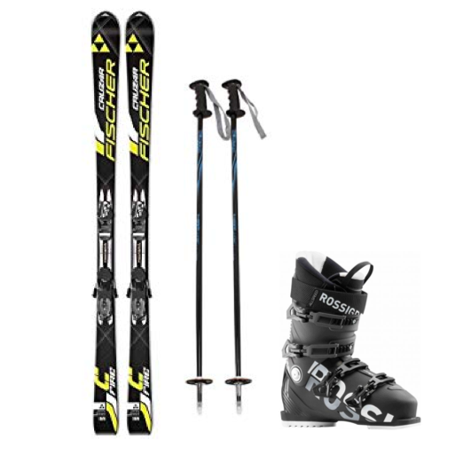
- スキーウェア（ジャケット、パンツ）: 約20,000円〜50,000円 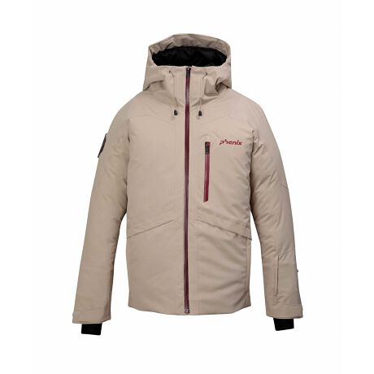
- アクセサリー（ゴーグル、ヘルメット、グローブ）: 約10,000円〜30,000円 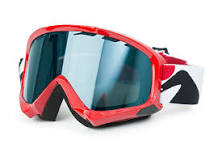
- リフト券: 1日券で約4,000円〜7,000円 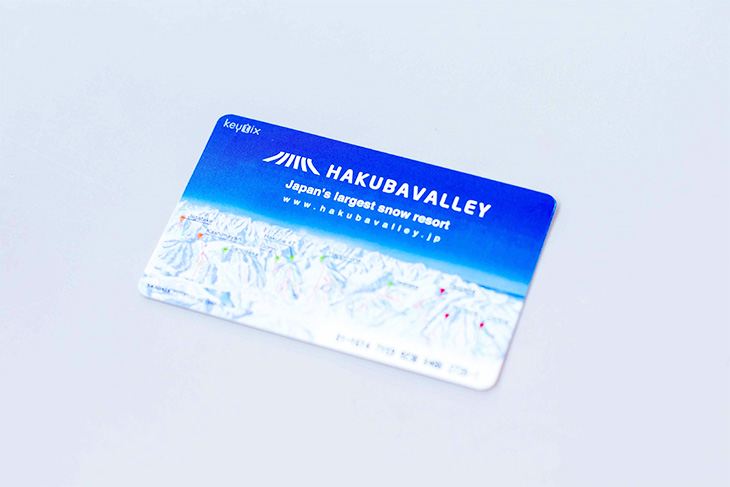
- スキースクールのレッスン料: 1日あたり約5,000円〜10,000円 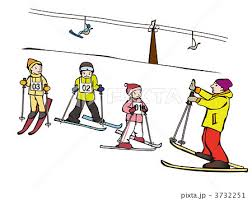
合計費用の目安: 約89,000円〜197,000円
おすすめリゾート
白馬八方尾根スキー場
長野県北安曇郡白馬村
公式サイト 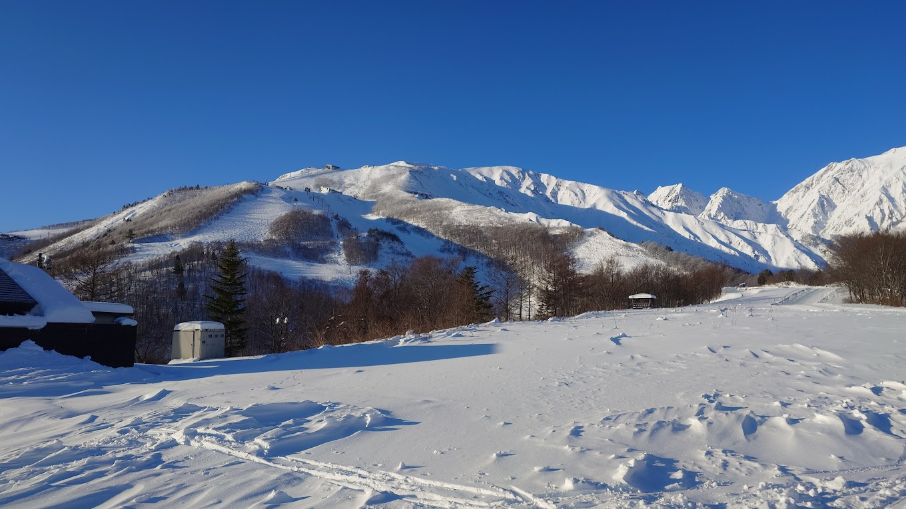美しい景色と豊富な積雪量で知られる白馬八方尾根スキー場は、初心者から上級者まで楽しめる多様なコースを提供しています。
口コミ:
"初めて訪れましたが、スタッフの対応が素晴らしく、楽しい時間を過ごせました。コースも多様で飽きません。" - 山田太郎
"スキーイン・スキーアウトの便利さが最高です。景色も美しく、また来たいです。" - 佐藤美咲
"施設が充実しており、家族連れでも楽しめました。特にキッズパークが良かったです。" - 鈴木一郎
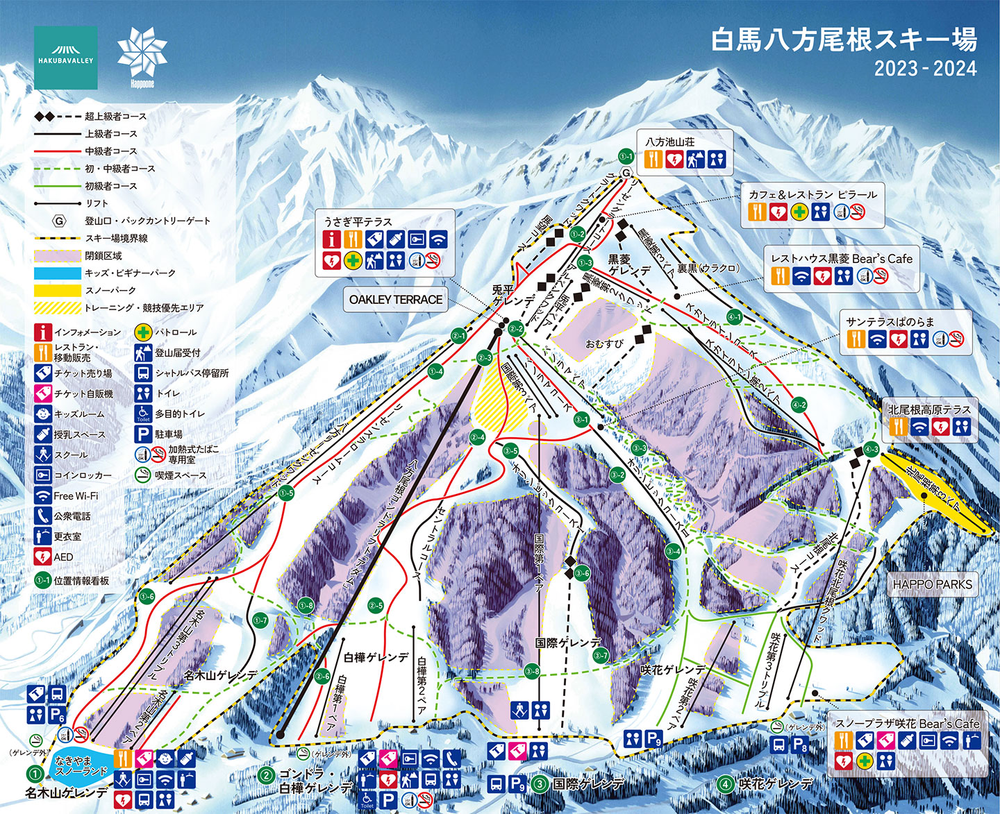ニセコ東急グラウンヒルフ
北海道虻田郡倶知安町ニセコひらふ１条２丁目９−１
公式サイト 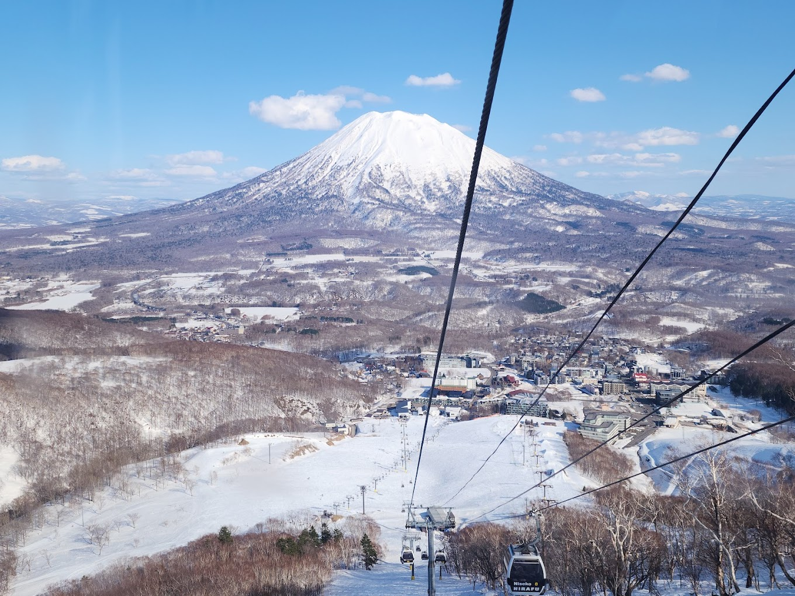世界有数のパウダースノーで有名なニセコグラン・ヒラフ。幅広いコースと豊富なアクティビティが魅力です。
口コミ:
"パウダースノーが最高です！また訪れたいと思います。設備も整っており、快適に過ごせました。" - 佐藤花子
"景色が美しく、コースのバリエーションも豊富で飽きることがありません。" - 高橋一郎
"宿泊施設が充実していて、夜も楽しく過ごせました。温泉も最高でした。" - 田中二郎

苗場スキー場
新潟県南魚沼郡湯沢町
公式サイト 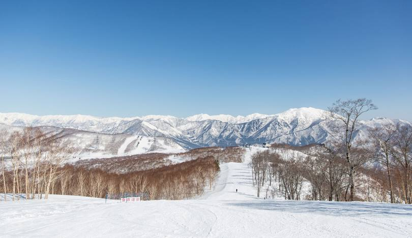大規模なリゾート施設と豊富なコースが魅力の苗場スキー場。家族連れにも人気で、ナイター設備も充実しています。
口コミ:
"家族で訪れましたが、子供向けのコースも充実していて安心して楽しめました。ナイターも美しかったです。" - 高橋一郎
"スノーボードも楽しめるので、ボーダーにもおすすめです。食事も美味しかったです。" - 渡辺三郎
"アクセスが良く、日帰りでも楽しめるスキー場です。次回はもっと長く滞在したいです。" - 石川四郎
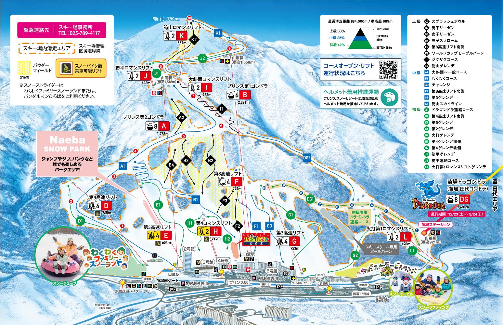スキーのやり方
1. 準備運動
スキーを始める前に、しっかりと準備運動をしましょう。しておかないと、筋肉痛などになってしまいますので準備運動は必ずしましょう。
2. 基本ポジション
スキー板の幅を肩幅程度に開き、膝を軽く曲げた姿勢を保ちます。最初は感覚がつかめなくて止まることも難しいと思いますが、繰り返すうちに上達しますので頑張りましょう。
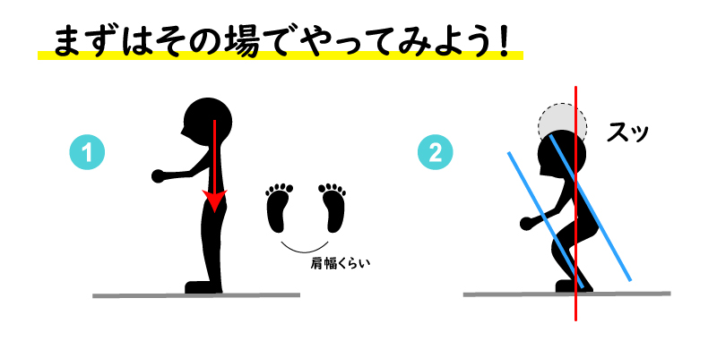3. 曲がり方
重心を左右に移動させながら、スキー板のエッジを使って曲がります。曲がるときには少しコツが必要で、重心を傾けるだけでなく、足の動きも重要です。
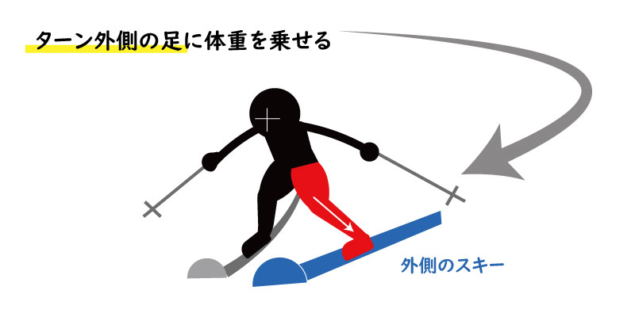4. 止まり方
「プルーク」という方法を使ってスピードをコントロールしながら止まります。ハの字に足を開きます。ハの字に開いてスキー板を地面に足を食い込ませる感じでやります。
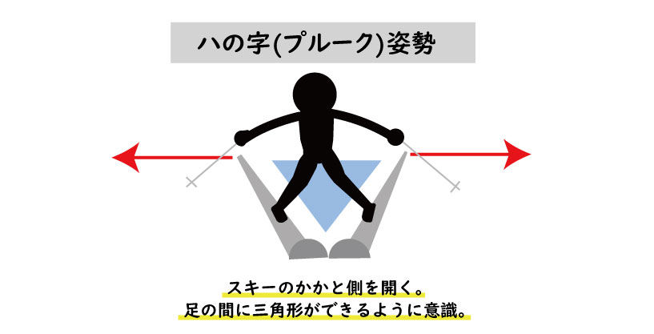